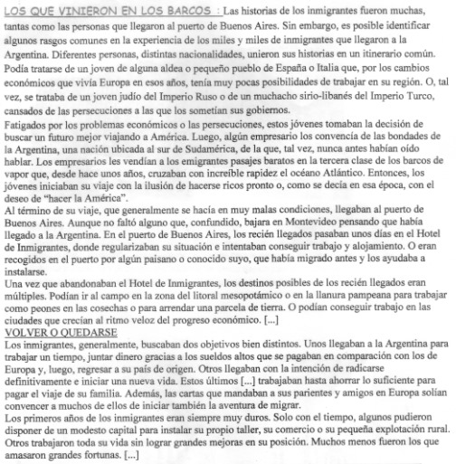
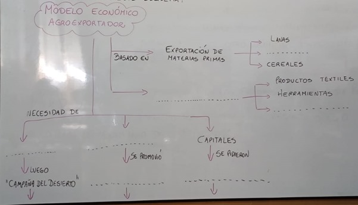
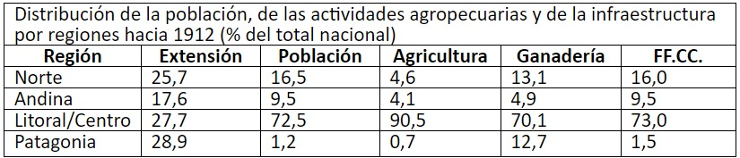

Colaboradores: Salvador y Jazmín
7 de mayo (7/5)
Descargar .docx (Archivo Word)
• Lean el siguiente texto del historiador Luciano de Privitellio:

Para analizar el texto, respondan:
1) ¿Por qué tantos europeos dejaron su país? ¿Qué esperaban encontrar en argentina? ¿Cómo fueron sus experiencias?
2) El texto menciona a las empresas navieras y las publicidades que hacen para entusiasmar a los jóvenes y venderles pasajes ¿Habrán logrado entusiasmar a los jóvenes con el viaje? ¿Por qué lo pensas?
3) El historiador comente que los primeros años de los inmigrantes en argentina ”eran siempre muy duros” ¿Qué pensas que quiere decir con esta expresión?
4) ¿Algo más te llamó la atención de lo que se relata en este texto?
{kind=link}

8 de mayo (8/5)
Descargar .docx (Archivo Word)Analizamos fotografías
• Trabajamos con diferentes fotografías.
En la imagen 3: Los recién llegados fueron retratados por un fotógrafo. Están sentados en los bancos del comedor del viejo hotel. Podemos ver:
- Entre los inmigrantes: Hombres, mujeres y niños.
- Personal del hotel.
1) ¿Podés diferenciar a las y los inmigrantes del personal que atiende el comedor? ¿Cómo te das cuenta? ¿Qué idiomas hablarían? ¿Sobre qué hablarían? ¿Por qué estarán tan serios en la foto?
2) Dice el historiador “Diferentes personas, distintas nacionalidades, vinieron sus historias en un itinerario común” ¿Qué significa?
3) Anotá quienes predominan entre los inmigrantes, ¿Los hombres, las mujeres o los niños?
Las imágenes 4 a 8: Son fotografías tomadas en el “Hotel de inmigrantes”, que reemplazó al viejo hotel llamado “La rotonda”. Observá las imágenes y lee los epígrafes.
1) ¿Qué aspectos del hotel te llaman la atención?
2) En el texto dice: “Los gobernantes pensaban que la llegada de inmigrantes europeos era la mejor alternativa para poblar el país y conseguir trabajadores que, además de su fuerza de trabajo, traerían una cultura superior”.
- ¿Qué relaciones podés establecer entre los intereses de los dirigentes y los servicios que el estado les ofrecía a los inmigrantes en el hotel?
- Los dirigentes decidieron colocar banderas y escudos argentinos en los ambientes del hotel y proyectar películas sobre los paisajes de la argentina. ¿Con qué intención lo habrán hecho?
10 de mayo (10/5)
Descargar .docx (Archivo Word)Un mapa de la gran inmigración
Vamos a representar las rutas de este enorme movimiento de personas hacia la Argentina en un mapa.
Para trazar las rutas
1) En un planisferio ubicamos continentes y océanos. Identificá Europa y Argentina.
2) En Europa, localizá los dos países europeos donde llegaron la mayor parte de las y los inmigrantes (Italia y España).
3) Trazá con el dedo el posible recorrido de los buques que trasladaron a españoles e italianos.
4) Quienes salieron de Italia, lo hicieron en su mayoría por el puerto de Génova, y quienes partieron de España, por el de Barcelona. A la Argentina llegaron al puerto de Buenos Aires. Buscá estos tres puertos en el planisferio y ubícalos.
5) Con la localización de continentes, océanos, puertos, países (Argentina, Italia y España) ya podés trazar el recorrido desde Génova y Barcelona hasta Buenos Aires. Podés representarlo en forma de línea que sale de cada puerto europeo, océano Atlántico, entra al río de la plata y llega a Buenos Aires.
6) Colócale a tu planisferio el título que te parezca adecuado a la información que contiene ahora.
7) Escribí un epígrafe para tu mapa.
16 de mayo (16/5)
Descargar .docx (Archivo Word)La ley Sáenz Peña
*Dejar 10 renglones para pegar una Fotocopia*
• Escriban un breve texto acerca de cómo era la argentina a fines del siglo XIX y principios del XX ¿Qué cambió y qué no con la ley Sáenz Peña?
28 de mayo (28/5)
Descargar .docx (Archivo Word) Los protagonistas de la gran inmigración
Trabajamos con fuentes históricas (Cartas) y la importancia que tuvieron para entender los movimientos migratorios.
La historia de vida de Marco y el testimonio de mayo son fuentes de información que nos acercan a la perspectiva de los migrantes.
Como cuenta la mayoría de los inmigrantes tener familiares o conocidos en el lugar de destino fue muy importante para emprender la difícil experiencia de migrar.
• ¿Qué personas formaban las cadenas migratorias, es decir, que ayudaron o acompañaron a Marco, Francesco, Pedro y Mario en su decisión de migrar y en su arraigo en argentina?
¿Cómo funcionaban esas cadenas migratorias?
*Dejar 9 renglones para pegar una fotocopia*
La carta fue el principal modo de intercambiar información y de pedir o de ofrecer ayuda entre parientes y paisanos que estaban en Europa y en América, de un lado y del otro del océano Atlántico. Las cartas iban y venían, en los vapores que cruzaban el océano, a través de conocidos que viajaban o del correo postal, un sistema que se organizó en esta época para que la enorme cantidad de cartas que intercambiaban los migrantes y sus familiares o allegados llegaran a sus destinatarios.
30 de mayo (30/5)
Descargar .docx (Archivo Word)La gran inmigración en los censos nacionales de población
Los censos nacionales de población son fuentes de información fundamentales para estudiar los movimientos migratorios en la argentina. El primer censo se realizó durante la presidencia de sarmiento, en el año 1.869. Desde entonces se realizaron nueve censos nacionales más.
Los censos dan información confiable sobre la población y sus características. Por la información que registran, permiten conocer no solo la cantidad de habitantes que había en el momento de cada censo en el territorio argentino, si no también algunos aspectos de cómo estaba compuesta la población.
Vamos a tener en cuenta los primeros cuatro censos nacionales.
- 1.869: Censo representativo de la situación anterior a la gran inmigración.
- 1.895 y 1.914: Aportan información sobre la llegada de extranjeros.
- 1.947: Censo que caracteriza a la población en un momento posterior, cuando llegan pocos inmigrantes europeos.
• Analicen los datos censales que se presentan a continuación.
*Dejar 9 renglones para pegar una fotocopia*
En 1.869 vivían en total en argentina 1.737.000 personas y en 1.947 ya eran 15.893.000 los italianos fueron la mayoría entre los extranjeros censados todos estos años.
- Observá y respondé:
1) El total de población de la argentina en las celdas resaltadas ¿A los censos de qué años corresponden?
2) ¿En qué censos advertís que creció más el total de extranjeros?
3) ¿En qué fechas pueden haber sido censados los pasajeros del vapor *Umbría*? Recordá que en el afiche decía que este vapor había partido del puerto de Livorno en 1.901.
*Deja espacio para responder*
• En este gráfico se destaca mejor que, si bien el total de extranjeros en 1.914 y 1.947 es similar, hay un cambio en sus países de origen, no solo disminuyeron las y los inmigrantes europeos, sino que aumentaron las y los que llegan de américa latina.
1) Completá el epígrafe del gráfico 2 a partir de tus observaciones.
*Dejar 11 renglones para pegar una fotocopia*
4 de junio (4/6)
Descargar .docx (Archivo Word)La argentina agroexportadora
• Leemos el siguiente texto.
• Intercambio oral.
*Dejar 8 renglones para pegar una fotocopia*
La revolución industrial que se originó en Gran Bretaña en 1.780, se dividía en dos grupos:
- Economías especializadas en la producción de materias primas.
- Economías dedicadas a la producción de manufacturas industriales.
(Países con economías industrializadas)
• Investiguen en libros de texto de la biblioteca los conceptos desconocidos y desarróllenlos.
• ¿En qué consistió la división internacional del trabajo? ¿En qué grupo se ubicó a la argentina? Anoten sus hipótesis en la carpeta.
6 de junio (6/6)
Descargar .docx (Archivo Word)- Leemos el siguiente texto.
*Dejar 10 reglones para pegar una fotocopia*
• Completamos el siguiente esquema:

- Teniendo en cuenta el esquema, redactá un texto explicativo
13 de junio (13/6)
Descargar .docx (Archivo Word)El ferrocarril revoluciona el país
El ferrocarril, fabuloso invento europeo, pronto comenzó a extenderse por el mundo y hacia 1850 llego a argentina.
• Trabajamos con el libro Ciencias Sociales “Conocer” ED. Santillana. Lean el texto “Se expande el ferrocarril” de la página 42 y escriban un resumen en la carpeta.
*Deja espacio para responder*
• Observen el mapa de la red ferroviaria.
*Deja 15 renglones para pegar una fotocopia*
A) ¿Por qué se habla de un sistema ferroviario tipo abanico?
B) ¿Qué provincias les parece que se beneficiaron con la expansión del ferrocarril? ¿Cuáles se vieron perjudicadas?
C) Analicen el cuadro de las inversiones británicas expresadas en millones de libras (Moneda de Gran Bretaña) para la expansión de la red ferroviaria en la argentina.
| Año | 1880 | 1890 | 1913 |
|---|---|---|---|
| Inversiones para la expansión del ferrocarril | 7.6 Millones | 64.6 Millones | 215 Millones |
D) ¿Cuántos millones de libras más que en 1880 invirtió Gran Bretaña en 1913 para ferrocarriles?
E) ¿Cómo relacionan este crecimiento en la inversión con la expresión ferroviaria reflejada en el mapa?
F) ¿Qué consecuencias habrá tenido en la vida de las personas la llegada del ferrocarril?
25 de junio (25/6)
Descargar .docx (Archivo Word) El modelo agroexportador y el desarrollo regional
En este modelo agroexportador, no todas las regiones del país desarrollaron sus economías de la misma manera. Las regiones del litoral y centro del país, aquellas que tienen las tierras más fértiles, se vieron favorecidas, concentrando la mayor parte de las actividades agropecuarias y, con ellas, de la infraestructura y de la población.

• Observen el cuadro.
1) ¿Qué información aporta?
2) ¿Qué regiones concentraban el desarrollo de la producción agrícola-ganadera?
3) ¿Por qué puede hablarse de un desarrollo regional diverso?
3 de julio (3/7)
Descargar .docx (Archivo Word) La construcción histórica del territorio de la republica argentina
Mapa 1 (etapa indígena): El continente americano densamente poblado en el momento de la llegada de los españoles, en especial en los territorios incaicos de américa del sur y en las áreas de influencia del imperio azteca. en el actual territorio de argentina se asentaban numerosos grupos étnicos, que presentaban distintas formas de organización política y cuyas prácticas de subsistencias eran diversas. En el momento inicial de la conquista, en el noroeste, las sierras pampeanas y la Mesopotamia habitan pueblos que practicaban la agricultura, mientras que en el resto del territorio vivían principalmente tribus nómadas dedicadas a la caza y recolección.
Mapa 2 (el impacto de la conquista española): A partir del siglo XVI, la conquista española produjo en la organización de los pueblos originarios un impacto general y masivo de mucho poder, que la población de américa tarda unos 300 años en volver a los números previos a la etapa de conquista. La resistencia indígena al sometimiento fue uno de los principales factores que provocaron esta caída, pero más importante fue el impacto que causó enfermedades en américa (como la viruela) y el régimen de trabajo que eran sometidos los pueblos una vez instalados los adelantados, los gobernadores y otros funcionarios coloniales.